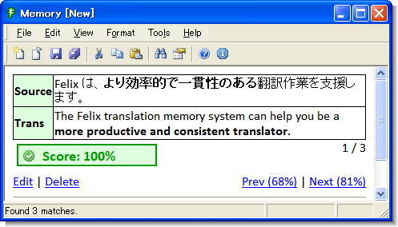
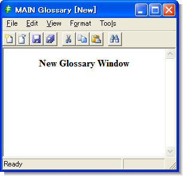

Felix Manual
1.2 About Felix
Felix consists of two main components: a memory component and a glossary component. Both components feature a similar, intuitive user interface, but the two components have different and complementary roles.
Screen Shots
Memory Window

Glossary Window

How it Works
As you translate a document, Felix keeps a record of each source sentence you translate, along with the corresponding translation and other information, in translation memory entries. Each time you translate a new sentence, Felix compares it with the entries in its database. If it finds an entry matching or nearly matching the current sentence, it suggests the translation to you:

Where Query is the sentence you are currently translating, Source is the sentence in the memory, and Trans is the translation you gave for that sentence. Score shows the similarity score for the two sentences. The parts that are different are bold and highlighted in red, for ease of recognition. You can choose to use the suggestion as-is, retrieve the suggestion and edit it, or ignore the suggestion and write a new translation.
If there is a perfect match, the search results will be shown with a green background and a check mark for easy recognition.
Meanwhile, as Felix searches the translation memory for matches, it also looks for occurrences of your glossary entries in that sentence, and lists any matches it finds. A glossary is a list of technical or frequently occurring terms that you would like to refer to as you translate.

You can import the glossary entry translations into your document as you type. In the TagAssist application, glossary entry translations appear in an Autocomplete window, for even greater speed and ease of retrieval. Additionally, as you translate, Felix automatically adds short sentences and phrases to the glossary [1]. There are also numerous tools to quickly and efficiently build glossaries, both from Felix itself and from its various interfaces.
Translation memories and glossaries are stored in XML format, a widely recognized standard for data storage. Both memories and glossaries are saved with the same xml schema, making them highly interchangeable. Additionally, Felix can import memories and glossaries in Trados text and Microsoft Excel formats, and export memories and glossaries into Trados text files as well.
Felix uses Unicode internally. This means it can process and display just about any language, as well as most mathematical and other special symbols.
Felix includes a variety of features to help you edit, build, and manage your translation memories and glossaries. You can use Felix from Microsoft Word or Excel, as well as the TagAssist [2] application, or even control it from a custom application using automation.
Felix is also fully bilingual. A single shortcut key or menu command is all that is required to toggle the user interface between Japanese and English.

Notes
[1] Translation
memory entries with a source field whose length is below a specific number of
characters are automatically added to the glossary. You can configure this
length in the user preferences. See 3.2.11 Set User Preferences for details.
[2] TagAssist is a what-you-see-is-what-you-get (WYSIWYG) HTML editor that includes a full Felix interface. It is included in the Felix product suite. See the TagAssist documentation for details.